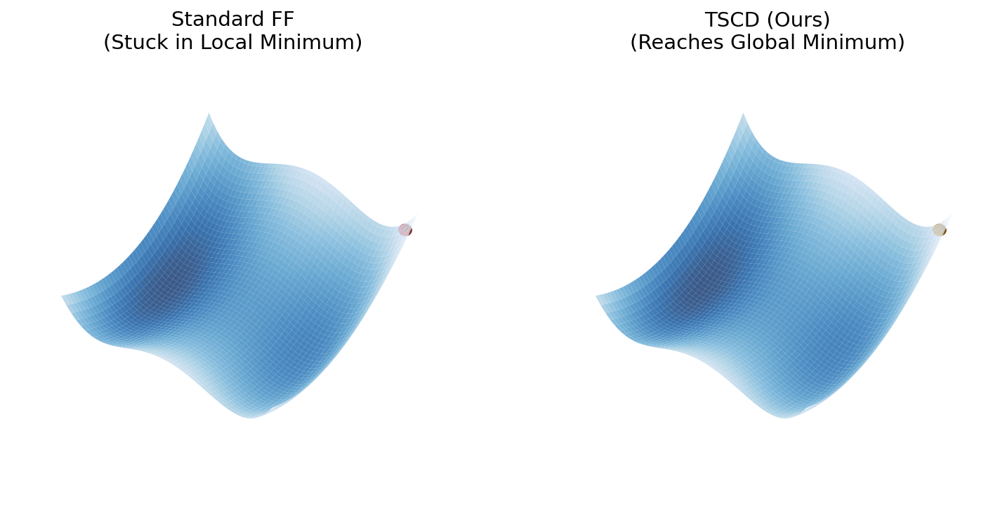

TSCD formulates the weakness of Forward-Forward learning as an error decomposition: local goodness loses information near decision boundaries, while zero-order forward updates introduce variance and curvature-induced bias. Tri-stream coupled dynamics preserves discriminative state differences and stabilizes the estimator without reverting to global backpropagation.
Forward-Forward (FF) learning offers a local alternative to backpropagation, but its goodness-based signal can become least informative on the examples where discrimination is most needed. We decompose this gap into two parts: Information Error, where activity differences vanish near decision boundaries, and Approximation Error, where the forward-gradient estimator suffers from bias and variance.
Tri-Stream Coupled Dynamics (TSCD) addresses these two terms with a positive stream, a negative stream, and a cross-fusion stream, then stabilizes the estimator with MP-GBS and TF-GVS. The architecture follows the decomposition: dyadic states reduce information loss, cross-fusion preserves contrast between positive and negative streams, and MP-GBS with TF-GVS controls the variance and bias terms of the forward-gradient estimator.
We identify and formalize two fundamental error sources that explain the performance gap between forward learning and backpropagation.
At decision boundaries where positive goodness Gpos ≈ negative goodness Gneg, the gradient proxy vanishes while BP maintains strong signals. This "Boundary Collapse" phenomenon means hard samples near the boundary stop contributing to learning.
The forward gradient is fundamentally a zero-order estimator. Variance is amplified by the inverse square of the nudging factor, while Bias emerges from curvature-induced drift in the Hessian.
When positive and negative goodness approach each other, the FF update can lose the local contrast needed for hard examples. TSCD preserves a usable contrastive direction through paired states and cross-stream coupling.
The local goodness difference weakens as Gpos and Gneg become indistinguishable.
Dyadic states and cross-stream transfer keep the update direction informative even near the boundary.
Schematic illustration of the boundary-collapse mechanism; the bars summarize expected local signal strength implied by the paper's error model rather than reported training curves.
The derivation proceeds from the error decomposition to the boundary-collapse condition, then to dyadic recovery, cross-stream fusion, and the bias–variance controls that shape the final forward update.
The BP–FF gap is decomposed into information error, variance, and bias, making each TSCD component accountable to a specific failure term.
TSCD combines dyadic state recovery, cross-stream fusion, and estimator controls so that information preservation and approximation-error reduction are handled by separate but coupled mechanisms.
The mechanism states separate the standard FF proxy, dyadic recovery, cross-stream fusion, and the full TSCD update into comparable configurations.
When positive and negative goodness become similar, the local proxy no longer supplies a discriminative update, producing the boundary-collapse mechanism that can lead to shallow local basins.
The estimator controls expose the roles of γ, temporal averaging, multi-plane directions, and fusion strength in reducing bias, variance, and the remaining gap to the BP direction.
The estimator profile follows the paper’s qualitative relationships: variance scales with inverse nudging, temporal averaging reduces variance, and multi-plane aggregation reduces curvature-induced bias.
The trajectory rendering contrasts the basin behavior predicted by the error model: standard FF can settle into a shallow local basin, while TSCD maintains a cross-stream correction signal that keeps descent aligned with the deeper basin.
The trajectory is presented as a continuous training timeline, turning the 3D descent path into a compact explanation of information error, coupled correction, variance suppression, and convergence.

Local goodness becomes weak near hard decision boundaries, so FF can accept a shallow basin even when a deeper descent path still exists.
Positive, negative, and cross-fusion streams keep complementary signals active, producing a less myopic update direction.
The trajectory summarizes the paper’s mechanism chain: error decomposition, coupled dynamics, smoother descent, and stronger empirical performance.
The empirical matrix summarizes accuracy, remaining BP gap, local-learning gain, domain transfer, and ablation evidence across the reported benchmark settings.
Each row reports BP, the strongest prior local-learning comparison used for the setting, TSCD, the gain over prior local learning, and the remaining gap to BP.
| Benchmark | Architecture / setting | BP | Prior local | TSCD | Gain | Gap to BP | Interpretation |
|---|
“Prior local” refers to the strongest local-learning baseline used for the displayed comparison; the filters separate core vision, extended-domain, medical-imaging, and average rows.
The diagnostics connect the proposed mechanism to measurable quantities: alignment with the BP direction and the relative error budget induced by each TSCD component.
Noisy cosine-alignment sketch for the BP-gradient diagnostic. Thin traces show raw mini-batch fluctuations; brighter traces show the smoothed trend, preserving qualitative ordering without looking artificially clean.
Relative error-budget sketch for the three error terms. The indices encode qualitative ordering only and are not reported measurements.
@inproceedings{tscd2026neurips,
title={Overcoming Information and Approximation Errors in
Forward Learning via Tri-Stream Coupled Dynamics},
author={Anonymous Authors},
booktitle={Submission to Conference on Neural Information Processing Systems (NeurIPS)},
year={2026}
}